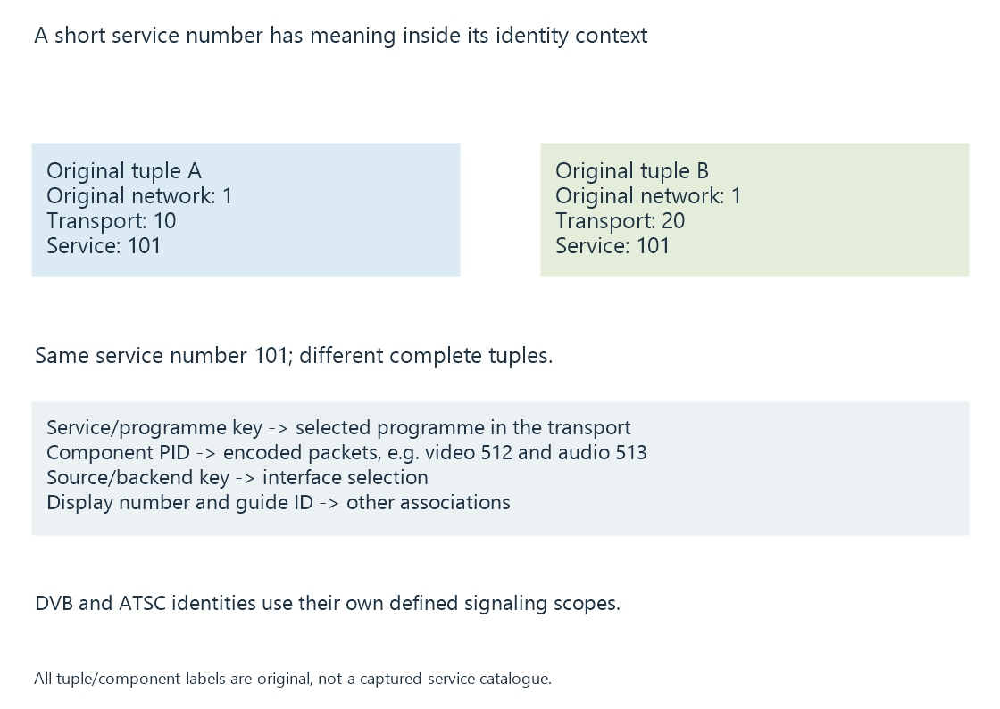

Broadcast service identifiers
Broadcast service identifiers locate a programme within its defined network/transport/source context, independently of component PIDs and viewer-facing channel labels.
A television service needs an identity the receiving system can use to select its media. That identity is not necessarily the number shown in the guide or the PID of its video packets.
Its scope is part of its meaning.
The same service ID can exist in two contexts
DVB service identity uses the appropriate original-network, transport-stream and service relationship.
Consider two original entries:
[
{"originalNetworkId": 1, "transportStreamId": 10, "serviceId": 101},
{"originalNetworkId": 1, "transportStreamId": 20, "serviceId": 101}
]
Both have service ID 101, but they identify different transport/service contexts. A key made from the service ID alone would collide.

These are readable teaching tuples, not native SI bytes or a real broadcaster inventory.
A backend can also add its own source identity when services from several origins are combined. The provider-specific mapping should preserve that provenance.
A PID identifies component packets in a transport
In an original programme 101, video PID 512 and audio PID 513 identify two components. They are not alternative spellings of programme 101.
PAT/PMT relationships connect the programme to its component descriptions. Multiplexes and programme tables develop that selection.
Component PIDs also have transport scope. A PID reused on another transport is not automatically the same media component.
ATSC has its own identity relationships
ATSC PSIP links virtual-channel information to the relevant transport and programme. Its fields include channel_TSID and program_number, with source identity information serving other defined associations.
Those names should be interpreted within A/65, rather than copying a DVB tuple rule as though every broadcast family uses identical signaling.
Virtual channel numbers explains the viewer-facing major/minor label.
Guide and presentation keys serve another purpose
| Identifier | Purpose in the selected arrangement |
|---|---|
| Broadcast service/programme identity | Select the programme in its transport context |
| Component PID | Select or identify encoded component packets |
| Source/backend channel key | Address a service through that source interface |
| Display channel number/name | Present the channel to the viewer |
| Guide channel identifier | Associate programme descriptions with the source channel |
An M3U tvg-id is a channel-list identifier. It need not equal a DVB service ID numerically.
For Emby, the adapter/source connects its stable key to the actual service. The guide mapping then joins a different description source to that channel.
Changing a display label while retaining the selection key need not change the programme. Dropping the key’s context can instead select another service that happens to reuse the same short number.
See Also
- Broadcast multiplexes
- Virtual channel numbers
- Channel lineups and source identity
- MPEG-TS Program Tables: PAT and PMT